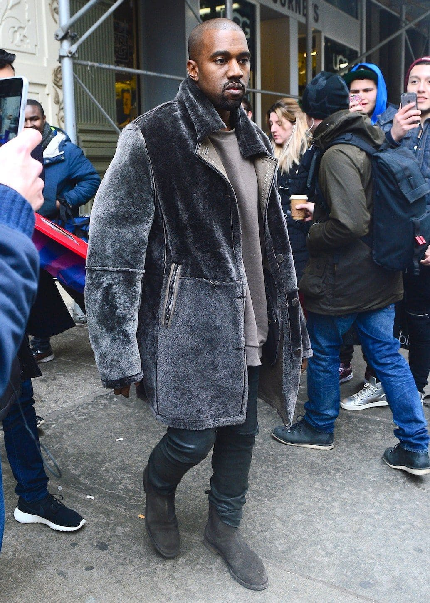

ОСНОВНЫЕ
ЧЕРТЫ
У Канье необычный для рэпера бэкграунд — сын декана факультета английского языка и фотожурналиста, он вырос в обеспеченной культурной семье. Сам он, правда, университет так и не закончил, но зато выпустил тематический альбом The College Dropout. Его моментально запомнили — не только благодаря удачной пластике, но и нетипичному для рэпера стилю. В 2004 году Канье одевался как старшеклассник из богатой семьи: свитшоты c плюшевым мишкой от Ralph Lauren и рюкзаки Louis Vuitton. После этого мы видели классические костюмы в стиле P. Diddy, камуфляжные куртки и рабочие штаны. При этом Канье всегда удавалось избегать приставки «чересчур» — так он заслужил звание самого стильно рэпера. И не остановился на этом.

Канье в оверсайз черной шубе

Канье в белой куртке с пайетками

Канье в болотном меховом пальто
Канье в рваных джинсах, ярко-синем худи и куртке цвета хаки